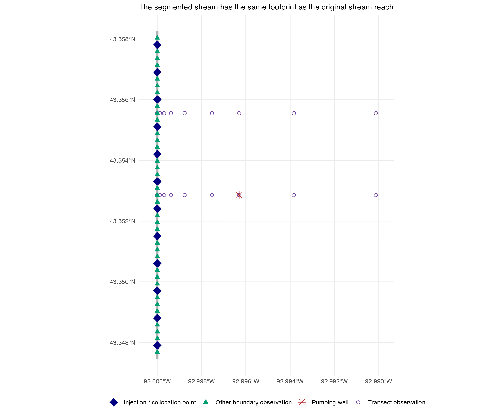
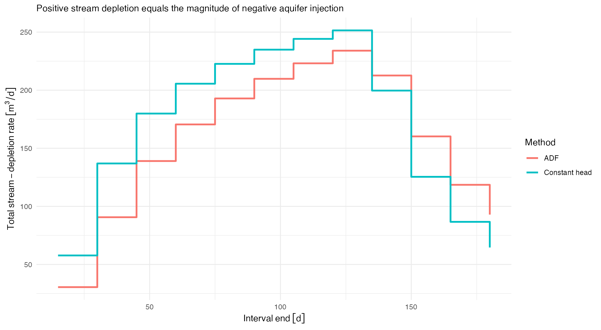
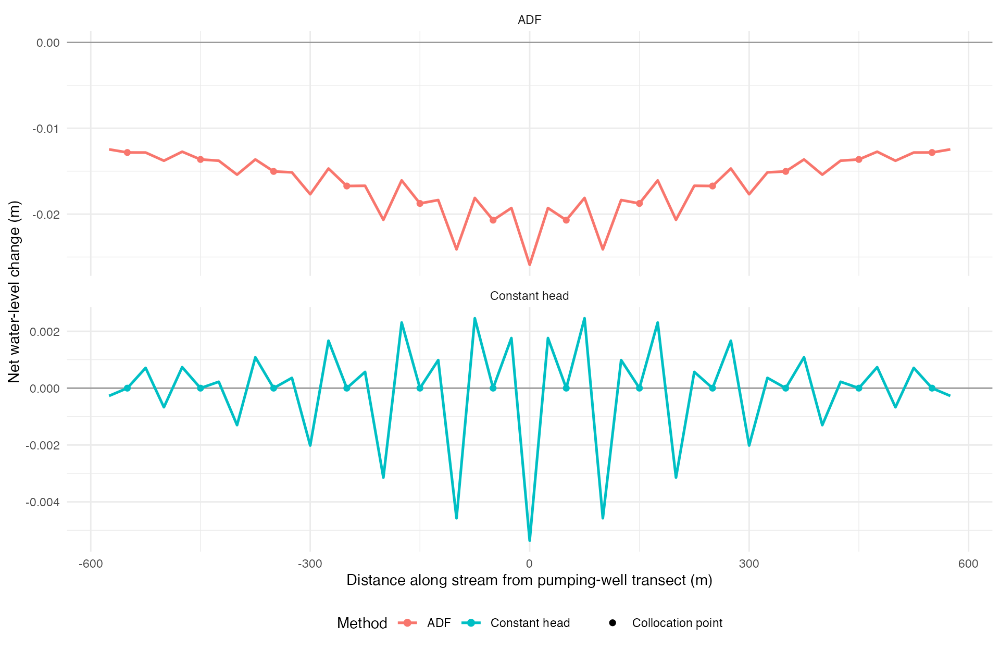
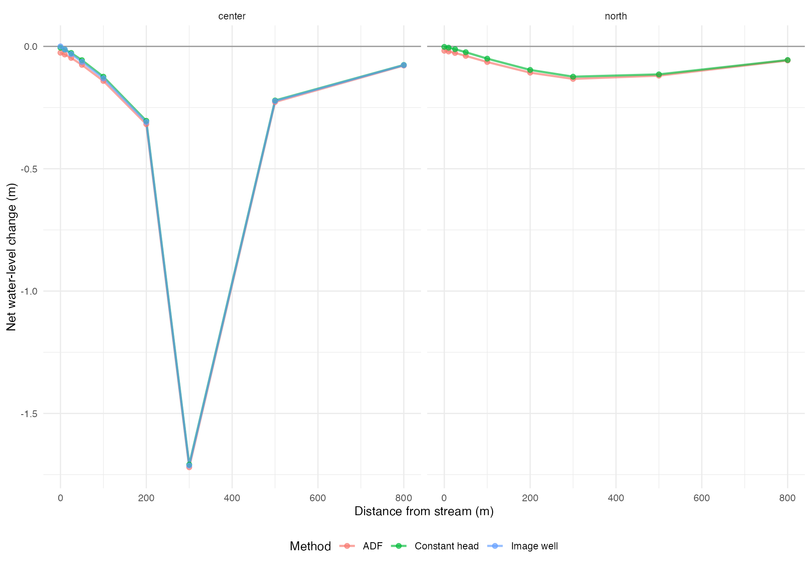

stream-injection-methods.Rmdisw supports two ways to model how a stream responds to pumping:
method = "adf" estimates total stream depletion with analytical depletion functions, then distributes that depletion among stream segments. This is the default method.method = "constant_head" solves for the injection rate at each stream segment. The rates are chosen so that net water-level change is zero at each segment’s model point at the end of every injection interval.This vignette uses both methods to evaluate the same aquifer and pumping scenario. The methods share the stream geometry, pumping schedule, temporal grid, and observation locations so their results can be compared directly. The scenario is deliberately simple: one pumping well beside a straight stream in a homogeneous aquifer. This geometry also permits comparison with the analytical image-well solution.
Distance calculations require a projected CRS. This example creates its inputs directly in UTM zone 15N. When stream_reaches uses a geographic CRS, get_stream_segments() selects a local UTM CRS unless the user supplies analysis_crs. Later functions transform pumping and observation wells to the CRS used by the stream segments.
The full UTM coordinates are not helpful for understanding the layout, so the example defines origin_x and origin_y at the point where the stream crosses the pumping-well transect. Every location is written as a distance from this origin while remaining in the projected CRS.
Each input has a distinct role in the shared workflow:
stream_reaches defines the stream geometry. get_stream_segments() divides this geometry into segments that can be used with either injection method.pumping_wells identifies the pumping wells and provides their locations and aquifer properties. These data are needed for ADF apportionment, the stream injection schedules, and the water-level calculation.pumping_schedules gives the pumping rate through time for each well. get_stream_injection_schedule() uses it to calculate the stream response, and get_aquifer_water_level_change() uses it to calculate drawdown from the pumping wells.See the detailed spatial-input discussion for the required stream and well columns. The temporal-input discussion describes the pumping-schedule format. The corresponding function references are also available with ?get_stream_segments and ?get_stream_injection_schedule.
analysis_crs <- 32615
origin_x <- 500000
origin_y <- 4800000
stream_reaches <- st_sf(
reach_id = "stream_1",
geometry = st_sfc(
st_linestring(matrix(
c(
origin_x, origin_y - 600,
origin_x, origin_y + 600
),
ncol = 2,
byrow = TRUE
)),
crs = analysis_crs
)
)
pumping_wells <- st_as_sf(
tibble(
pump_id = "pump_1",
x = origin_x + 300,
y = origin_y,
K = set_units(10, "m/day"),
D = set_units(30, "m"),
V = 0.15,
well_diam = set_units(0.3, "m")
),
coords = c("x", "y"),
crs = analysis_crs
)
pumping_schedules <- tibble(
t = set_units(c(0, 120), "days"),
pump_1 = set_units(c(400, 0), "m^3/day")
)get_stream_segments() divides the stream before either injection method is applied. Its output contains no ADF weights or injection rates, so the same segments can be used by both methods.
Each segment has a model_point. This point is the location of the segment’s discrete injection well and, for the constant-head method, the point where the zero-change condition is enforced. By default, well_diam is half the length represented by the segment. The Theis response is therefore capped within a radius equal to one quarter of that length.
stream_segments <- get_stream_segments(
stream_reaches,
reach_spacing = set_units(100, "m")
)
stream_segments[c(
"reach_id", "reach_segment_id", "represented_length", "well_diam"
)]
#> Simple feature collection with 12 features and 4 fields
#> Geometry type: LINESTRING
#> Dimension: XY
#> Bounding box: xmin: 5e+05 ymin: 4799400 xmax: 5e+05 ymax: 4800600
#> Projected CRS: WGS 84 / UTM zone 15N
#> First 10 features:
#> reach_id reach_segment_id represented_length well_diam
#> 1 stream_1 stream_1_segment_1 100 [m] 50 [m]
#> 2 stream_1 stream_1_segment_2 100 [m] 50 [m]
#> 3 stream_1 stream_1_segment_3 100 [m] 50 [m]
#> 4 stream_1 stream_1_segment_4 100 [m] 50 [m]
#> 5 stream_1 stream_1_segment_5 100 [m] 50 [m]
#> 6 stream_1 stream_1_segment_6 100 [m] 50 [m]
#> 7 stream_1 stream_1_segment_7 100 [m] 50 [m]
#> 8 stream_1 stream_1_segment_8 100 [m] 50 [m]
#> 9 stream_1 stream_1_segment_9 100 [m] 50 [m]
#> 10 stream_1 stream_1_segment_10 100 [m] 50 [m]
#> geometry
#> 1 LINESTRING (5e+05 4799400, ...
#> 2 LINESTRING (5e+05 4799500, ...
#> 3 LINESTRING (5e+05 4799600, ...
#> 4 LINESTRING (5e+05 4799700, ...
#> 5 LINESTRING (5e+05 4799800, ...
#> 6 LINESTRING (5e+05 4799900, ...
#> 7 LINESTRING (5e+05 4800000, ...
#> 8 LINESTRING (5e+05 4800100, ...
#> 9 LINESTRING (5e+05 4800200, ...
#> 10 LINESTRING (5e+05 4800300, ...Observations spaced every 25 m along the stream show the modeled water level at the collocation points and between them. Two perpendicular transects show how the response changes with distance from the stream. One crosses the pumping well; the other is 300 m north.
segment_coordinates <- st_coordinates(stream_segments$model_point)
boundary_y <- seq(origin_y - 575, origin_y + 575, by = 25)
boundary_observations <- tibble(
observation_id = paste0("boundary_", seq_along(boundary_y)),
observation_type = "stream boundary",
transect = NA_character_,
distance_from_stream = set_units(0, "m"),
distance_along_stream = set_units(boundary_y - origin_y, "m"),
x = origin_x,
y = boundary_y,
is_collocation = boundary_y %in% segment_coordinates[, "Y"]
)
transect_distances <- c(0, 10, 25, 50, 100, 200, 300, 500, 800)
transect_offsets <- c(center = 0, north = 300)
transect_observations <- do.call(
rbind,
lapply(names(transect_offsets), function(transect_name) {
tibble(
observation_id = paste0(
"transect_", transect_name, "_", transect_distances
),
observation_type = "transect",
transect = transect_name,
distance_from_stream = set_units(transect_distances, "m"),
distance_along_stream = set_units(
rep(transect_offsets[[transect_name]], length(transect_distances)),
"m"
),
x = origin_x + transect_distances,
y = origin_y + transect_offsets[[transect_name]],
is_collocation = FALSE
)
})
)
observation_table <- bind_rows(
boundary_observations,
transect_observations
)
observation_wells <- st_as_sf(
observation_table,
coords = c("x", "y"),
crs = analysis_crs
)
ggplot() +
geom_sf(data = stream_segments, color = "grey70", linewidth = 1.4) +
geom_sf(
data = filter(
observation_wells,
observation_type == "transect"
),
aes(color = "Transect observation", shape = "Transect observation"),
size = 2
) +
geom_sf(
data = filter(
observation_wells,
observation_type == "stream boundary" & !is_collocation
),
aes(
color = "Other boundary observation",
shape = "Other boundary observation"
),
size = 2.4
) +
geom_sf(
data = st_sf(geometry = stream_segments$model_point),
aes(
color = "Injection / collocation point",
shape = "Injection / collocation point"
),
size = 5.4
) +
geom_sf(
data = pumping_wells,
aes(color = "Pumping well", shape = "Pumping well"),
size = 3.5
) +
scale_color_manual(values = c(
"Pumping well" = "firebrick",
"Injection / collocation point" = "navy",
"Other boundary observation" = "#009E73",
"Transect observation" = "#6A3D9A"
)) +
scale_shape_manual(values = c(
"Pumping well" = 8,
"Injection / collocation point" = 18,
"Other boundary observation" = 17,
"Transect observation" = 1
)) +
coord_sf(xlim = c(origin_x - 25, origin_x + 825)) +
labs(
subtitle = paste(
"The segmented stream has the same footprint as the original",
"stream reach"
),
x = NULL,
y = NULL,
color = NULL,
shape = NULL
) +
theme_minimal() +
theme(legend.position = "bottom")
Boundary observations that coincide with model points are shown only as a blue injection/collocation point, rather than as two overlapping symbols.
Before constructing the schedules, we choose the output times and the time step used for stream injection.
evaluation_times <- set_units(c(30, 60, 90, 120, 180), "days")
injection_times <- set_units(seq(0, 180, by = 15), "days")evaluation_times specifies when the model returns water-level results. The stream-injection schedule must extend through all of these times.
injection_times controls the internal time resolution of that schedule. It adds boundaries between piecewise-constant injection intervals but does not request more water-level output. Pumping-schedule times and evaluation times are always included as interval boundaries, whether or not injection_times is supplied.
For ADF, stream depletion changes continuously. The schedule approximates this change with a constant rate in each interval, using the average depletion at the interval’s two endpoints. Shorter intervals improve this approximation.
For constant head, the model solves one set of injection rates for each interval and holds those rates constant until the next interval begins. The zero-change condition for hydraulic head at the stream is enforced at the interval end. Shorter intervals let the rates adjust more often and enforce the condition more frequently. They also alter the injection history carried into later intervals, so they can change constant-head results even when evaluation_times stays the same. This example uses the same 15-day increment for both methods so that differences in the results are less likely to be caused by different time steps.
The extra injection_times are optional. If injection_times is omitted, the package uses the pumping-schedule and evaluation times as the interval endpoints to set constant injections.
More intervals require more analytical response evaluations for ADF and more matrix solves for constant head. Note that the constant-head calculation reuses a matrix factorization when the interval duration and aquifer properties are the same. The temporal-input discussion provides more detail about evaluation times, and the injection-grid walkthrough shows how optional injection times are merged with required boundaries.
The ADF workflow first calculates pump-specific weights for the stream segments, then passes those weights to get_stream_injection_schedule(). The constant-head workflow passes the stream segments directly to the same function. Both schedules use the interval grid defined above.
stream_apportionment <- get_adf_stream_apportionment(
pumping_wells,
stream_segments,
sample_spacing = set_units(25, "m"),
method = "web_squared"
)
adf_schedule <- get_stream_injection_schedule(
pumping_wells,
pumping_schedules,
stream_segments,
evaluation_times,
injection_times,
method = "adf",
stream_apportionment = stream_apportionment
)
constant_head_schedule <- get_stream_injection_schedule(
pumping_wells,
pumping_schedules,
stream_segments,
evaluation_times,
injection_times,
method = "constant_head"
)The constant-head schedule keeps each pump’s contribution separate. It also reports two diagnostics. boundary_residual is the signed water-level change remaining at a collocation point after the solve. matrix_condition_number indicates how sensitive the solved rates are to small numerical or input changes. isw warns when the condition number exceeds .
constant_head_diagnostics <- constant_head_schedule |>
st_drop_geometry() |>
summarize(
maximum_absolute_boundary_residual_m = max(abs(as.numeric(
set_units(boundary_residual, "m")
))),
maximum_matrix_condition_number = max(matrix_condition_number),
number_of_aquifer_factorizations = n_distinct(aquifer_id)
)
constant_head_diagnostics
#> # A tibble: 1 × 3
#> maximum_absolute_boundary_resi…¹ maximum_matrix_condi…² number_of_aquifer_fa…³
#> <dbl> <dbl> <int>
#> 1 6.94e-17 5.90 1
#> # ℹ abbreviated names: ¹maximum_absolute_boundary_residual_m,
#> # ²maximum_matrix_condition_number, ³number_of_aquifer_factorizationsWater lost from the stream enters the aquifer. The model represents this water as injection wells along the stream and stores injection as a negative well rate. Stream depletion therefore has the same magnitude as the summed injection rate but the opposite sign: stream_depletion_rate = -sum(injection_rate).
For ADF, this quantity is the interval-average analytical depletion distributed among the segments. For constant head, it is the total injection needed to maintain the boundary condition.
stream_depletion_comparison <- bind_rows(
mutate(adf_schedule, method = "ADF"),
mutate(constant_head_schedule, method = "Constant head")
) |>
group_by(method, interval_end) |>
summarize(
stream_depletion_rate = -sum(injection_rate),
.groups = "drop"
)
ggplot(
stream_depletion_comparison,
aes(interval_end, stream_depletion_rate, color = method)
) +
geom_step(linewidth = 1) +
labs(
x = "Interval end",
y = "Total stream-depletion rate",
subtitle = paste(
"Positive stream depletion equals the magnitude of negative",
"aquifer injection"
),
color = "Method"
) +
theme_minimal()
get_aquifer_water_level_change() can use either completed schedule. For the constant-head schedule, net water-level change should be zero to numerical precision at every collocation point and interval end. The method does not enforce zero change between collocation points, so those values help reveal how well the discrete wells represent the full stream boundary.
ADF calculates depletion but does not directly enforce water level at the stream. Nonzero water-level changes are therefore expected for the ADF result.
adf_water_levels <- get_aquifer_water_level_change(
pumping_wells,
pumping_schedules,
observation_wells,
stream_segments,
evaluation_times,
stream_injection_schedule = adf_schedule
) |>
mutate(method = "ADF")
constant_head_water_levels <- get_aquifer_water_level_change(
pumping_wells,
pumping_schedules,
observation_wells,
stream_segments,
evaluation_times,
stream_injection_schedule = constant_head_schedule
) |>
mutate(method = "Constant head")
water_levels <- bind_rows(adf_water_levels, constant_head_water_levels) |>
left_join(st_drop_geometry(observation_wells), by = "observation_id") |>
mutate(water_level_change_m = as.numeric(set_units(
water_level_change,
"m"
)))
water_levels |>
filter(
observation_type == "stream boundary",
evaluation_time == set_units(90, "days")
) |>
ggplot(aes(
as.numeric(distance_along_stream),
water_level_change_m,
color = method
)) +
geom_hline(yintercept = 0, color = "grey60") +
geom_line(linewidth = 0.9) +
geom_point(
data = function(data) filter(data, is_collocation),
aes(shape = "Collocation point"),
size = 2
) +
facet_wrap(~method, scales = "free_y", ncol = 1) +
labs(
x = "Distance along stream from pumping-well transect (m)",
y = "Net water-level change (m)",
color = "Method",
shape = NULL
) +
theme_minimal() +
theme(legend.position = "bottom")
water_levels |>
filter(observation_type == "stream boundary", is_collocation) |>
group_by(method, evaluation_time) |>
summarize(
maximum_absolute_water_level_change_m = max(abs(
water_level_change_m
)),
.groups = "drop"
)
#> # A tibble: 10 × 3
#> method evaluation_time maximum_absolute_water_level_change_m
#> <chr> [d] <dbl>
#> 1 ADF 30 2.82e- 2
#> 2 ADF 60 2.60e- 2
#> 3 ADF 90 2.07e- 2
#> 4 ADF 120 1.52e- 2
#> 5 ADF 180 2.06e- 2
#> 6 Constant head 30 2.78e-17
#> 7 Constant head 60 2.78e-17
#> 8 Constant head 90 8.33e-17
#> 9 Constant head 120 8.33e-17
#> 10 Constant head 180 5.55e-17The transect plots show how the discrete stream representation behaves away from the boundary. At day 90, the center transect can also be compared with the analytical image-well solution for a straight, constant-head stream.
isw uses positive rates for pumping and negative rates for injection. get_straight_stream_drawdown_ratio() returns the signed ratio , which is negative. Multiplying the positive pumping rate directly by this ratio gives the signed water-level change.
image_well_reference <- tibble(
method = "Image well",
transect = "center",
distance_from_stream = set_units(transect_distances, "m"),
evaluation_time = set_units(90, "days"),
water_level_change_m = as.numeric(set_units(
set_units(400, "m^3/day") * get_straight_stream_drawdown_ratio(
x1 = set_units(300, "m"),
x2 = set_units(transect_distances, "m"),
y_diff = set_units(0, "m"),
K = pumping_wells$K[[1]],
D = pumping_wells$D[[1]],
V = pumping_wells$V[[1]],
t = set_units(90, "days"),
well_diam = pumping_wells$well_diam[[1]]
),
"m"
))
)
transect_results <- water_levels |>
filter(
observation_type == "transect",
evaluation_time == set_units(90, "days")
) |>
select(method, transect, distance_from_stream, water_level_change_m)
bind_rows(transect_results, image_well_reference) |>
ggplot(aes(
as.numeric(distance_from_stream),
water_level_change_m,
color = method
)) +
geom_hline(yintercept = 0, color = "grey60") +
geom_line(linewidth = 0.9, alpha = 0.65) +
geom_point(size = 1.8, alpha = 0.65) +
facet_wrap(~transect) +
labs(
x = "Distance from stream (m)",
y = "Net water-level change (m)",
color = "Method"
) +
theme_minimal() +
theme(legend.position = "bottom")
The constant-head method used here represents the stream with discrete wells. The following checks help assess that approximation: